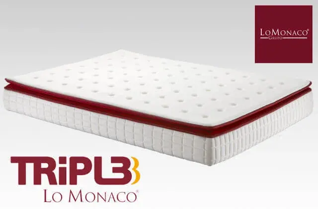

Cómo elegir un buen colchon

Elegir colchón se torna una tarea harto complicada, dada la cantidad de materiales que existen en el mercado y que se utilizan para la fabricación de colchones.
Vamos a dar unas nociones básicas para elegir colchón sobre los tipos de componentes más frecuentes que podemos encontrar.
Muelles
Son los colchones que tradicionalmente más se han vendido en nuestro país, aunque últimamente la tendencia de consumo está variando hacia materiales más novedosos y sobre los que hablaremos posteriormente.
-Hilo continuo: Se fabrica con alambre de hierro que atraviesa la estructura en forma de zigzag. Su resultado es un tipo de producto muy firme y resistente.
-Muelles bicónicos (Bonell): Son muelles bicónicos y acoplados por una varilla en el contorno. Es el sistema de muelles tradicional y su principal característica es una alta firmeza.
-Muelles cilíndricos o embolsados: Los muelles como su propio nombre indica, tienen forma de cilindro y se envuelven en sacos de tela, para evitar su rozamiento. Son estructuras independientes, proporcionan un apoyo preciso al cuerpo y al no haber roce entre muelles, son más silenciosos que los tipos anteriores.
Látex
El látex proviene de la savia del árbol tropical “Heveas Brasiliensis”, cultivado en Asia, África y Sudamérica. La mayor parte de esta resina se utiliza para la fabricación de guantes quirúrgicos, neumáticos y preservativos; la otra parte se dedica a la industria del descanso. En el proceso de fabricación, somete a la resina a un proceso de vulcanización, que da lugar un bloque de espuma elástica (gracias a una estructura de células abiertas), atérmica, higiénica (impide la proliferación de colonias de ácaros) y que varía en grosor. El latex da la posibilidad de combinar diferentes firmezas en su superficie, gracias a las perforaciones en el núcleo, conseguiríamos entonces diferentes zonas de descanso para las diferentes zonas del cuerpo. Posteriormente este núcleo se enfunda dando lugar a diferentes resultados finales. Un ejemplo de colchon de latex sería el del Grupo Lo Monaco Comfort 1.8
Viscoelástico
La viscoelástica, es una espuma de última generación, que inicialmente se utilizó en exclusividad para uso terapéutico, para personas que tenían largos períodos de convalecencia. La razón estaba en que las principales características del material: la termosensibilidad y la reacción ante la presión; de tal forma, se acopla a las curvas corporales de los durmientes, creando un molde perfecto.
Podemos encontrar combinaciones de este material con otros, pero la más frecuente es la que utiliza como soporte una capa de espuma de poliuretano de alta resiliencia (o “high resilience”).
Al igual que lo detallado con los anteriores materiales, el resultado final puede variar según el grosor de cada capa, el tipo de material viscoelastico utilizado, composición de la espuma de poliuretano…etc. Otro ejemplo sería el colchon FIRM de Grupo Lo Monaco
Que debemos saber a hora de elegir un colchón
¿Qué debemos saber a hora de elegir un colchón? Vamos a ver una serie de recomendaciones:
• Las recomendaciones de los equipos médicos, especialistas en espalda, son claras al respecto: se debe optar por un colchón de firmeza media (ni duro ni blando), que sustente la columna y a su vez que adapte a las curvas de la espalda.
• Hay un colchón para cada persona: Se debe elegir el colchón que mejor que adapte a nuestro Índice de Masa Corporal, nuestra altura, posibles dolencias, preferencias…etc.
• Revisa la base antes de cambiar el colchón: un somier o base tapizada en mal estado, puede anular los efectos de un buen colchón, además de contribuir al deterioro prematuro del mismo. Se recomienda cambiar entonces el equipo de descanso al completo.
Teniendo en cuenta que puedes pasar durmiendo al día una media de 7 horas, lo que puede suponer que pases unas 200.000 horas descansando sobre tu cama a lo largo de toda tu vida, ¿no crees que es suficiente razón para dedicar un mínimo esfuerzo en la elección de nuestro equipo de descanso?, piénsalo…